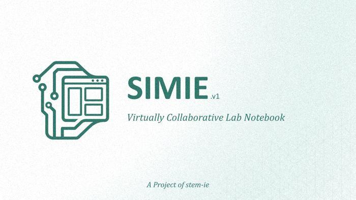
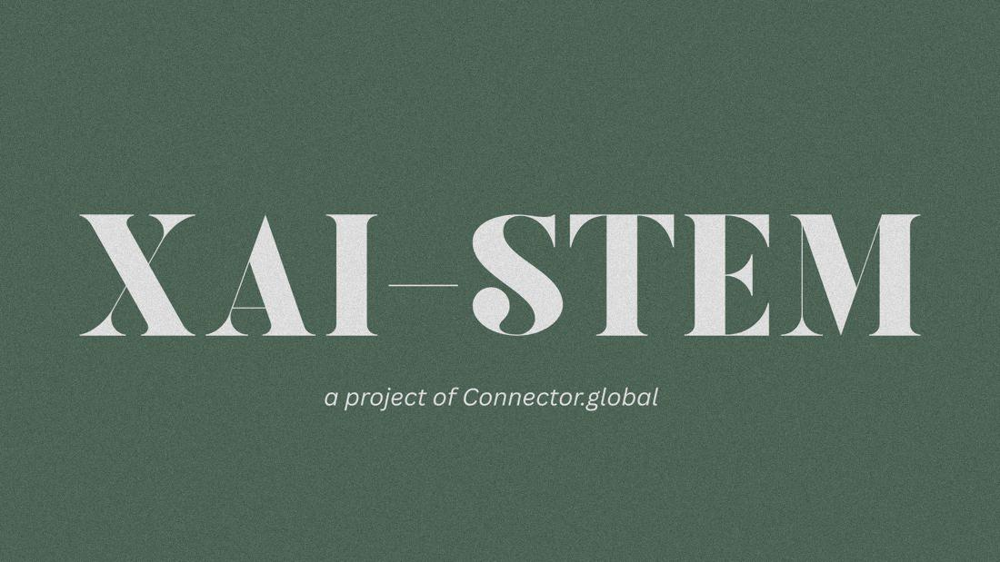
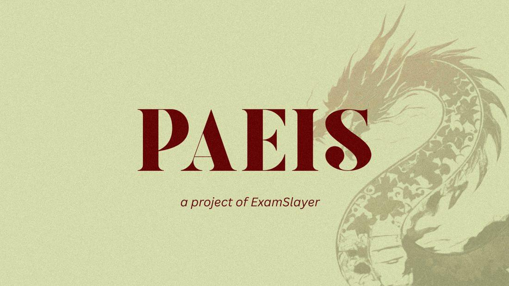
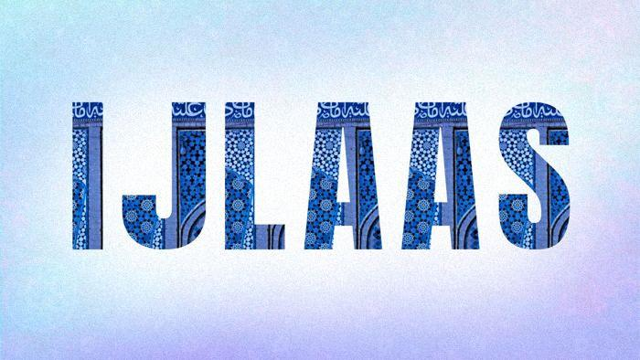
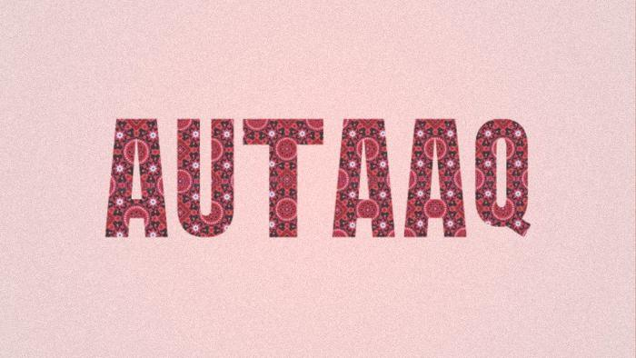
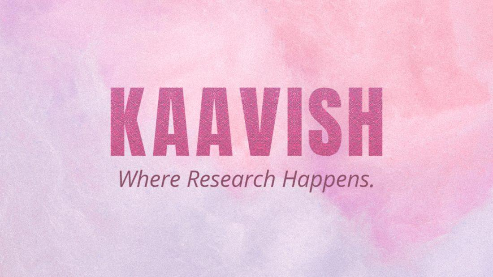

Projects
Products, platforms and research in progress. Select a project to read more on the blog.

Biomedical simulation
SIM-IE turns biomedical equipment into something you can explore
Status: concept and planning blueprint, October 2026
SIM-IE is a proposed biomedical engineering simulation and learning platform. It aims to help learners connect theory to how biomedical equipment and systems behave, through guided, interactive and repeatable experiences, especially where physical equipment, specialist labs or mentors are hard to reach.
It is designed to complement, not replace, physical laboratories, supervised clinical exposure and manufacturer-authorised training. The plan is to begin with one tightly scoped learning experience, test it with learners and educators, then grow toward virtual labs, scenario-based practice and educator tools. Founded and led by Izma Mohammad, and presented at IBFT'26 (SSUET & UTM).
Read on the blog →
EdTech research
XAI-STEM: teaching the algorithm to explain itself
Status: research design, August 2026
How can Explainable AI help STEM teachers make personalised, data-informed decisions while seeing clear reasons behind every recommendation? XAI-STEM combines a literature review with three planned experiments: benchmarking predictive models on a public STEM education dataset, benchmarking explanation methods such as SHAP and LIME, and evaluating the explanations with teachers. Izma serves as Product Progression Director.
Read on the blog →
Adaptive learning
PAEIS: the intelligence behind ExamSlayer
Status: proposed specification v1.0, October 2026
The Personalized Adaptive Exam Intelligence System keeps an evolving picture of a learner's knowledge, misconceptions, exam technique and retention, then recommends the next most useful action: a question, feedback or a revision task. It is the framework beneath ExamSlayer, aimed first at CAIE IGCSE and International A-Level students. It is a modular system, not a single language model, and its benefits remain to be tested.
Read on the blog →
Connector.global platform
IJLAAS: the live classroom
Part of Connector.global
Virtual meetings, webinars and workshops designed for up to 1,000 participants, with a whiteboard, polls and breakout rooms.
Read on the blog →
Connector.global platform
AUTAAQ: the community hub
Part of Connector.global
A community and networking space where educators and learners connect, exchange ideas and build communities across borders.
Read on the blog →
Connector.global platform
KAAVISH: where research happens
Part of Connector.global
A research and insights workspace for academic projects, action research, school benchmarking and research writing.
Read on the blog →Game-based revision
Prep Hop: exam revision at running speed
Status: draft requirements v1.0, October 2026
A browser-based endless runner with a pastel bunny. When an obstacle approaches, the game freezes and asks an exam-style question; a correct answer makes the bunny hop. It follows five IGCSE and O Level courses, randomises numbers each round, and ends each run with a report card by topic.
Read on the blog →Game-based learning
Aina Blues escapes the maths temple
Status: product document v1.0, October 2026
An escape-room game for Grade 7 to 9 mathematics. Players guide Aina Blues, a white Turkish Angora cat detective, through a temple, choosing answers by running through one of four doors, earning XP, unlocking outfits and getting a printable report card. It is a single web page, easy to embed in school sites.
Read on the blog →